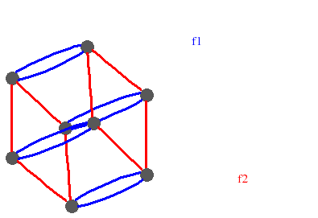
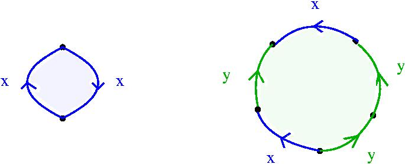
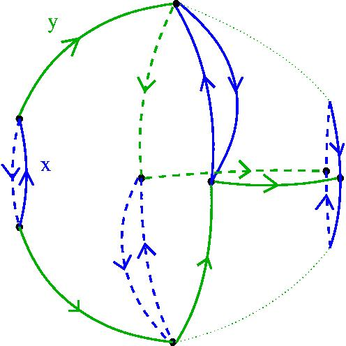

|
|||
|---|---|---|---|
There
is a standard way of associating to any group presentation P = < x | r > a 2-dimensional
connected CW-space KP whose fundamental group is
isomorphic to the group G defined by the presentation. The space KP
has a single 0-cell, one
1-cell for each generator in x,
and one 2-cell for each relator in r (attached to the
1-skeleton of KP in such a way that its boundary spells the
relator). Quite a number of papers have been written on the
problem of
calculating the second homotopy group Pi2(KP).
This homotopy group is a torsion free ZG-module and is called the module of identities of P.
Good introductions to the topic are given in
For presentations P defining a small group G the structure of the module Pi2(KP) can be determined using the HAP function ResolutionSmallFpGroup(G,n) . This function inputs a finitely presented group G and integer n>2. It returns n terms of a ZG-resolution R arising as the cellular chain complex of a space X where: X is contractible; X admits a free cellular action of G; the 2-skeleton X2 is the universal cover of the space KP. Standard properties of the universal cover and the Hurewicz Theorem yield ZG-isomorphisms
The article by Bogley and Pride mentioned above explains how the theory of Igusa's pictures can be used to find generators for the module of identities of the standard presentation P = < x,y | x2, y4, xyxy > of the dihedral group D4. This example can also be handled using the following commands. |
|||
| gap>
F:=FreeGroup("x", "y");; x:=F.1;; y:=F.2;; gap> D_4:= F / [ x^2, y^4, (x*y)^2 ];; gap> R:=ResolutionSmallFpGroup(D_4,3);; gap> RankOfIdentityModuleOverZ:= ( R!.dimension(2) - R!.dimension(1) + R!.dimension(0) )*Order(D_4) - 1; 15 gap> NumberOfGeneratorsOfIdentityModuleOverZG:=R!.dimension(3); 4 gap> #The four ZG-module generators are: gap> for i in [1..4] do > Print("\n Generator ", i, "=\n "); PrintZGword(R!.boundary(3,i),R!.elts); >od; Generator 1= ( - x*y^2 + y^2 )E1 Generator 2= ( - x + x*y )E2 Generator 3= ( - <identity ...> + x*y )E3 Generator 4= ( - <identity ...> - x*y - y - x*y^2 )E1 + ( - <identity ...> - x )E2 + ( + <identity ...> + x + x*y*x + y*x )E3 |
|||
| The
generators for the module of identities are here expressed as elements
in the free ZG-module R3 with basis E1, E2,
E3. An element in R3 of the form (1-g)Ei
is called a dipole by Bogley
and Pride. As in their paper we see that the module of identities is
generated by three dipoles and a fourth more complicated element. The
fourth element can be viewed as a map from the 2-sphere to the space Kp
using the following command. |
|||
| gap>
IdentityAmongRelatorsDisplay(R,4); 
|
|||
| The
function ResolutionSmallFpGroup(G,n)
is based on a fairly naive use of the standard LLL and Smith Normal
Form algorithms. It works only for groups of fairly low order but tends
to produce smaller resolutions than the function ResolutionFiniteGroup(gens,n).
The method is described in [G. Ellis and I. Kholodna,
"Three--dimensional presentations for the groups of order at most 30", LMS J. Math. Comp. Vol. 2 (1999),
93-117] and the function was implemented by Irina Kholodna. The function certainly works for groups larger than D4. For instance, the following commands take a couple of minutes to show that the standard presentation of the dihedral group D200 of order 400 also has a module of identities generated by four elements. (No doubt there's a theorem here!) |
|||
| gap>
F:=FreeGroup(2);; x:=F.1;; y:=F.2;; gap> D_200:= F / [ x^2, y^200, (x*y)^2 ];; gap> R:=ResolutionSmallFpGroup(D_200,3);; gap> R!.dimension(3); 4 |
|||
This
approach to modules of identities can yield interesting results for
some surprisingly small groups. We give two examples.
|
|||
| gap>
#EXAMPLE 1 gap> F:=FreeGroup(2);;x:=F.1;;y:=F.2;; gap> S_3:=F/[ x^2, y^3, (x*y)^2 ];; gap> R:=ResolutionSmallFpGroup(S_3,3);; gap> R!.dimension(3); 3 gap> #EXAMPLE 2 gap> F:=FreeGroup(3);;x:=F.1;;y:=F.2;;z:=F.3;; gap> S_4:=F/[x^2, y^2, z^2, (x*z)^2, (y*z)^3, (x*y)^3];; gap> R:=ResolutionSmallFpGroup(S_4,3);; gap> R!.dimension(3); 6 |
|||
| A
table listing presentations for the nonabelian groups of order at most
30, together with explicit generators for the corresponding modules of
identities, can be found here. |
|||
| Let
us now reconsider the symmetric group S3 with the unusual
presentation P'=< x, y | x2, xyx-1y-2
>. The following
commands establish the existence of an infinite periodic ZS3-resolution
R of period 4 (meaning Rn = Rn+4 for all n)
which, in any given dimension, has either one or two
generators. |
|||
| gap>
F:=FreeGroup(2);; x:=F.1;; y:=F.2;; gap> G:=F/[ x^2, x*y*x^-1*y^-2 ];; gap> Order(G); IsAbelian(G); #Test that G really is isomorphic to S_3. 6 false gap> R:=ResolutionSmallFpGroup(G,9);; gap> for i in [1..9] do Print(R!.dimension(i),"\n"); od; 2 2 1 1 2 2 1 1 2 gap> R!.boundary(5,1)=R!.boundary(9,1); true gap> R!.boundary(5,2)=R!.boundary(9,2); true |
|||
| The
existence of such a periodic ZS3-resolution of Z
is originally due to J. Milnor and was first published as an appendix
to the paper [R.G. Swan, "Periodic resolutions for finite
groups", Annals of Mathematics (2),
72 (1960), 267-291]. Swan proved that if a group G acts fixed-point
freely on a sphere then there is a periodic ZG-resolution of Z. The
interest in the group S3 is that it does not act freely on a
sphere. The periodic ZS3-resolution arises as the cellular chain complex of a contractible CW-space X on which S3 acts freely. An analysis of the boundary maps in the resolution yield the following explicit description of the orbit space B=X/S3 in low dimensions. This classifying space B has a unique 0-cell and two 1-cells which we label by x and y. It has two 2-cells which are attached to the 1-skeleton according to the following pictures. 
The space B has one 3-cell attached to the 2-skeleton according to the following picture. 
This last picture corresponds to an identity between the relators r:=x2 and s:=xyx-1y-2 and represents a map S2 → B2 from the 2-sphere to the 2-skeleton of B. This kind of map is called a homotopical syzygy in the paper [J.-L. Loday, "Homotopical sysygies", Contemp. Math. 265 (2000), 99-127]. Note that S3 can be regarded as the dihedral group D3. It is well known that the dihedral groups Dn admit periodic ZDn-resolutions if and only if n is odd, say=2k+1 . The period is always 4. One could attempt to construct periodic ZD2k+1-resolutions using a presentation such as < x,y | x2, y-k-1xyx-1> for D2k+1. For example, with k=20 the following commands can be used to construct an infinite periodic resolution for the diherdral group D41 of order 82. |
|||
| gap>
F:=FreeGroup(2);;x:=F.1;; y:=F.2;; gap> k:=20;; G:=F/[x^2,y^(-k-1)*x*y^k*x^-1];; gap> R:=ResolutionSmallFpGroup(G,5);; gap> for i in [1..5] do; Print(R!.dimension(i),"\n"); od; 2 2 1 1 2 |
|||
| Let us now return to the module of identities of the presentation P = < x,y | x2, y3, (xy)2 >. This defines the same group as the presentation P' = < x, y | x2, xyx-1y-2 > and we have seen that the module Pi2(KP') is generated by a single element. It is not difficult to establish (by an easy theoretical argument) that Pi2(KP) = ZS3 + Pi2(KP') and that the Z-rank of Pi2(KP') is equal to 1. In particular, Pi2(KP) is generated by just two elements. | |||
|